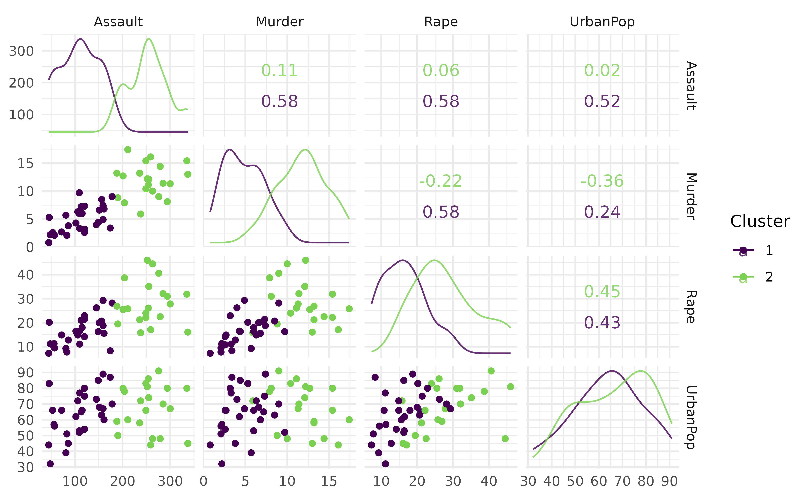

This vignette demonstrates how to integrate the G-Means algorithm with the mlr3 framework for clustering. We’ll start by loading the necessary libraries:
We define a custom LearnerClustGMeans class by extending LearnerClust for G-Means clustering.
LearnerClustGMeans <- R6::R6Class("LearnerClustGMeans",
inherit = LearnerClust,
public = list(
initialize = function() {
param_set <- ps(
k_init = p_int(2L, default = 2L, tags = "train"),
k_max = p_int(2L, default = 10L, tags = "train"),
level = p_dbl(0, 1, default = 0.05, tags = "train"),
iter.max = p_int(1L, default = 10L, tags = "train"),
algorithm = p_fct(
levels = c("Hartigan-Wong", "Lloyd", "Forgy", "MacQueen"),
default = "Hartigan-Wong",
tags = "train"
),
trace = p_lgl(default = FALSE, tags = "train")
)
super$initialize(
id = "clust.kmeans",
feature_types = c("logical", "integer", "numeric"),
predict_types = "partition",
param_set = param_set,
properties = c("partitional", "exclusive", "complete"),
packages = "gmeans",
man = "mlr3cluster::mlr_learners_clust.gmeans",
label = "G-Means"
)
}
),
private = list(
.train = function(task) {
pv <- self$param_set$get_values(tags = "train")
m <- invoke(gmeans::gmeans, x = task$data(), .args = pv)
if (self$save_assignments) {
self$assignments <- m$cluster
}
m
},
.predict = function(task) {
partition <- invoke(predict, self$model,
newdata = task$data(), type = "class_ids"
)
PredictionClust$new(task = task, partition = partition)
}
)
)We create a clustering task using the usarrests dataset
and train the G-Means learner.
task <- tsk("usarrests")
learner <- LearnerClustGMeans$new()
learner$train(task)
prediction <- learner$predict(task = task)
prediction
#> <PredictionClust> for 50 observations:
#> row_ids partition
#> 1 2
#> 2 2
#> 3 2
#> --- ---
#> 48 1
#> 49 1
#> 50 1We use autoplot() to visualize the clusters produced by
the G-Means learner.
autoplot(prediction, task)
#> Warning in GGally::ggscatmat(data, color = "partition"): Factor variables are
#> omitted in plot
We calculate performance metrics such as within-cluster sum of
squares (clust.wss) and silhouette width
(clust.silhouette).